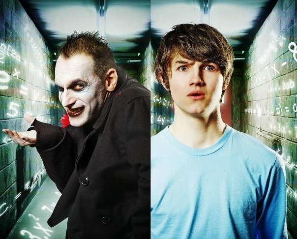
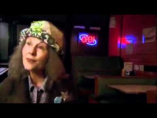

The Nightmare Man
Дата выхода: 11-12 октября 2010
Формат: 2 эпизода по 30 мин.
| Варианты озвучек: | * Разные: смотрите по инструкции |
|---|---|
| Скачивание и просмотр: |
Люк сталкивается с изменениями в жизни, и теперь его жизнь на Баннерман-роуд никогда не будет прежней. Тёмная фигура преследует его во снах — Кошмарный человек. Странное лицо обращается в наш мир через Люка, с ужасными последствиями для всей человеческой расы. Люк с Клайдом и Рани попадают в странный сон, и Сара Джейн должна бороться в одиночку!
Кошмарный человек становится сильнее, и только K9 может всех спасти. Но сможет ли Люк проявить мужество, чтобы встретиться со своей взрослой жизнью и спасти весь мир от ловушки бесконечного кошмара?

